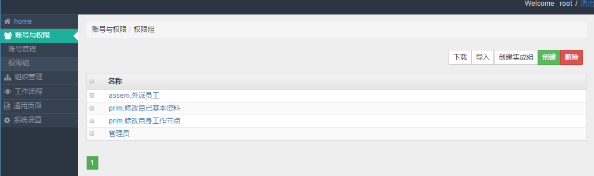
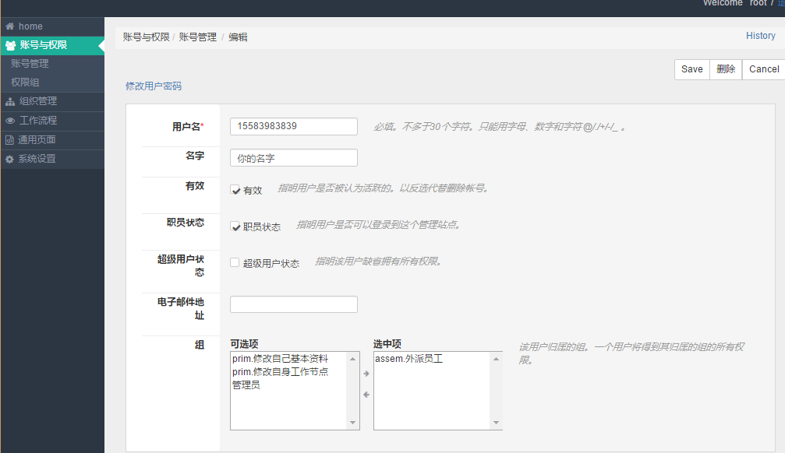

2. 人员权限¶
2.1. 创建权限组¶
可以在“账号与权限 > 权限组” 中创建与编辑管理组。

权限截图
2.1.1. 权限种类¶
权限按照其名字前缀不同，而具备不同的功能：
- assem.xxx
- 这个是其他权限的组合，英文assembly就是组合的意思。用来对prim.xxx权限进行分类整理。普通管理员可以创建“集成组”，并将集成组赋予员工。
- prim.xxx
- 这个是程序员设置的权限组，需要对系统比较了解才能进行编辑。
其他名字的权限组没有特殊意义，如 权限截图 中的“管理员”，在定义权限组的时候，最好不好创建这样的权限组。
管理权限组的最好方式是：利用集成组来分类prim.xxx权限，然后将集成组赋予员工。例如 权限截图 中，“assem.外派员工”包含了“prim.修改自己基本资料”和“prim.修改自身工作节点”这两个权限，对员工赋予“assem.外派员工”就可以了。
注解
对于普通管理员，不要去编辑prim.xxx权限组，否则可能会造成由于权限不够，造成系统某些功能不能使用。这些权限都是由程序员抽象出来供普通管理员使用的，必须经过大量的测试才能保证其功能正常。
2.2. 赋予员工权限¶
可以在“账号与权限 > 账号管理”中点击账号，进入编辑界面。

赋予用于权限截图
理论上普通管理员可以将所有权限赋予用户，但是最好将权限整理未assem.xxx的方式，然后只将assem.xxx的权限赋予用户。